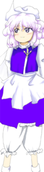

- Welcome to Touhou Wiki!
- Please register to edit. For assistance, check in with our Discord server or IRC channel.
Letty Whiterock
| レティ・ホワイトロック Letty Whiterock (♫) | |
|---|---|
|
Letty Whiterock in Perfect Cherry Blossom What Winter Left BehindMore Character Titles | |
| Species | |
| Abilities |
Manipulation of chill |
Music Themes | |
| |
Appearances | |
| Official Games | |
| |
| Print Works | |
| |
Letty Whiterock (レティ・ホワイトロック Retī Howaitorokku) is a seasonal youkai who's only seen during winter. She seems fittingly cold towards most of the humans she meets, and is feared by humans as she is known to freeze them.
General Information[edit]
Letty first appeared as the Stage 1 boss in Perfect Cherry Blossom, later she made a brief cameo in Hopeless Masquerade as a background character.
In Perfect Memento in Strict Sense, it was written that she was a type of yuki-onna. According to ZUN, if she was to show her full power compared to her strength shown in Perfect Cherry Blossom, it would cause an incident.[1]
Ability[edit]
- Manipulation of chill
She possesses an ability to manipulate chill. It's not an ability to create blizzards or make snow fall, but rather an ability to strengthen the "winter" that exists in the natural world. According to Perfect Memento in Strict Sense, since this is equivalent to an ability that manipulates the winter within nature, she possesses tremendous power according to the environment, but she is pretty much powerless outside of winter. In Bohemian Archive in Japanese Red, Letty herself said that outside of winter, she hides away in a place where not a ray of sunlight can reach. In Forbidden Scrollery, she is shown spreading snow over Gensokyo.
By lowering the temperature, humans become less capable of activity, and lose their fighting spirit. Furthermore, since it's not a physical attack, it's impossible to completely avoid it, and it's not possible to take up any countermeasure except doing something to the extent of wearing thick clothing.
Character Basis[edit]

Name[edit]
Her full name is Letty Whiterock (レティ・ホワイトロック). Letty's name and personality are based on the character Letitia "Letty" Blacklock from Agatha Christie's book "A Murder is Announced".
Design[edit]
In Perfect Cherry Blossom, Letty has lavender eyes and curly lavender hair. She wears a blue and white dress with a white apron in front of it. At the top of her skirt that is a golden lapel resembling the alchemical symbol for silver. Also wears a white cap and a nearly transparent cape. She was described by ZUN as being "fairly tall."[2] In Hopeless Masquerade, she is seen with white trousers.
Story[edit]
Games[edit]
- Perfect Cherry Blossom
Letty is challenged by the player as the probable cause of the extremely long winter. Though she is defeated easily, she was not at fault, and the player moves on.
- Main article: Reimu Arc
In Reimu's scenario, Reimu is complaining about the cold. Letty says she will help her have an "eternal deep sleep". But Reimu still complains about the cold and eventually defeat Letty.
- Main article: Marisa Arc
Marisa is lost and encounters Letty. Marisa suggests that winter should be the season where you sleep beneath the cherry trees, and Letty says she also wants to sleep for a long time due to the long winter. But Marisa does not want her to sleep so they can fight. They battle, with Marisa ending the winner.
- Main article: Sakuya Arc
Sakuya is searching for the mastermind behind the events happening but encounters Letty, who states she is the mastermind. Sakuya defeats her and continues to search for the real mastermind.
- Shoot the Bullet
In Shoot the Bullet, Aya Shameimaru encountered Letty on stage 2 and took photos of her danmaku.
- Hopeless Masquerade
Letty made a background cameo appearance in Hopeless Masquerade on the Hall of Dreams' Great Mausoleum stage. She is seen sitting on the mausoleum whilst shouting/cheering something.
Literature[edit]
- Bohemian Archive in Japanese Red
- Main article: Bohemian Archive in Japanese Red: Letty Whiterock
Aya finds Letty Whiterock who just had been, for no apparent reason, beaten up by a human and left buried in the snow. They talk about the long winter, and Aya suspects her as the culprit. Letty attempts to explain the fine details of her abilities and the hardships of her life, but fails to earn Aya's sympathy in the end.
Gallery[edit]
Letty's sigil in The Grimoire of Marisa
Illustration of Letty in Bohemian Archive in Japanese Red

Another illustration of Letty from Bohemian Archive in Japanese Red
Relationships[edit]
Minor Relationships[edit]
Nothing is known about her relationship status with Cirno. She appears to dislike being grouped up with her as she explains her superiority when interviewed by Aya Shameimaru in Bohemian Archive in Japanese Red. She is also seen talking to Cirno during Silent Sinner in Blue, although nothing is known about their conversation.
Spell Cards[edit]
| Name | Translated | Comments | Games | Stage | ||
|---|---|---|---|---|---|---|
| Total: 6 | ||||||
| 寒符「リンガリングコールド」 | Cold Sign "Lingering Cold" | PCB | St. 1: E/N/H/L | |||
| 冬符「フラワーウィザラウェイ」 | Winter Sign "Flower Wither Away" | PCB GoM |
St. 1: E/N — | |||
| 白符「アンデュレイションレイ」 | White Sign "Undulation Ray" | PCB | St. 1: H | |||
| 怪符「テーブルターニング」 | Mystic Sign "Table-Turning" | PCB | St. 1: L | |||
| 寒符「コールドスナップ」 | Cold Sign "Cold Snap" | StB GoM |
St. 2 — | |||
| 冬符「ノーザンウイナー」 | Winter Sign "Northern Winner" | StB | St. 2 | |||
Additional Information[edit]
- The brooch on her dress resembles the alchemical symbol for silver, coinciding with her theme, "Crystallized Silver".
- In her interview with Aya, Letty states that she hibernates in summer. However, she was seen with other youkai during the events of Hopeless Masquerade, that took place in summer.
- Dying while trapped or buried in snow, usually on a mountain, is a common death for humans who become yuki-onna. Letty's information in Bohemian Archive in Japanese Red may be a reference to this.
Fandom[edit]
Official Profiles[edit]
|  | ○冬の忘れ物
レティ・ホワイトロック １面のボス。冬になると何処からとも無く湧く妖怪。 レティは冬である限り幸せである。霊夢達がこの幸せの時を破ろうと ただ、毎年春というレティ達と花粉症持ちには憂鬱な季節が訪れる為、 春が訪れると、また何処かへ消えていってしまう。 |
What Winter Left Behind Letty Whiterock Stage 1 boss. A youkai of the winter season who can be found in places without heat. She possess the ability to manipulate chill. Letty is happiest during winter. She gets in the way of Reimu and her companions because they threaten to put an end to her time of greatest happiness. However, Letty and her fellow winter spirits as well as sufferers of hay fever know well that spring, a season of depression, comes every year. She accepts that fact and never attacks players seriously. When spring comes, she will disappear to unknown whereabouts. |
Official Sources[edit]
- 2003/08/17 Perfect Cherry Blossom - Stage 1 dialogue; キャラ設定.txt
- 2005/08/11 Shoot the Bullet - Stage 2 Spell Card comments
- 2005/08/14 Bohemian Archive in Japanese Red - Article and Interview: Letty Whiterock
- 2006/12/27 Perfect Memento in Strict Sense - Youkai of Winter: Letty Whiterock
- 2008/02/09 Silent Sinner in Blue - Chapter 9
- 2009/07/28 The Grimoire of Marisa - Letty Whiterock's Spell Cards
- 2009/02/21 Inaba of the Moon and Inaba of the Earth - Chapter 21
- 2010/12/25 Oriental Sacred Place - Chapter 12
- 2013/01/26 Forbidden Scrollery - Chapter 4
References[edit]
| This page is part of Project Characters, a Touhou Wiki project that aims to write proper descriptions for all official characters of Touhou Project. Please keep the character page guidelines in mind when contributing. |